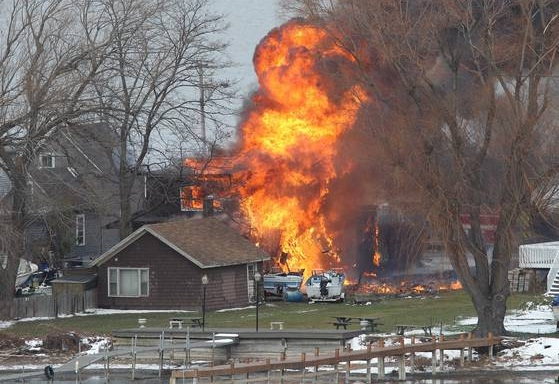
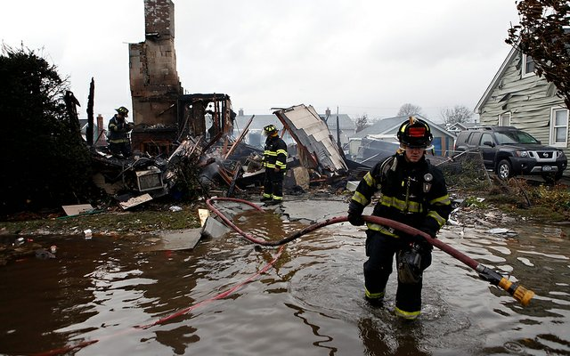

WEBSTER, NEW YORK (12/24/2012) - A police officer and volunteer firefighter were shot and killed while two other firefighters were injured in a shooting. Our deepest
condolences and prayers go out to the families of these individuals. May their lives and work be honored.

EAST COAST (10/30/2012) - Hurricane Sandy created historical damage to the northeast.
Our best wishes go out to everyone affected by this storm, and to
all fire fighters, police, and EMTs that are working in these affected areas. © 2012 The Washington Times.
CHICAGO, IL (7/29/2012) - More than 1,000 police and motorists drive down Chicago's W. Harrison St
to honor Chicago's 452 fallen officers at the "Area 4 Ride to Remember". © 2012 Chicago Tribune.
173 police officers and 78 fire fighters lost their lives in the line of duty in 2011.
There are more than 581,000 police and 30,000 fire departments active in the United States every day serving millions of people.
As citizens, they have gone above and beyond. These men, women, and departments deserve national recognition.
By selling eye-catching and independently designed clothing, Siren Apparel will create this national recognition and donate to these heroes.